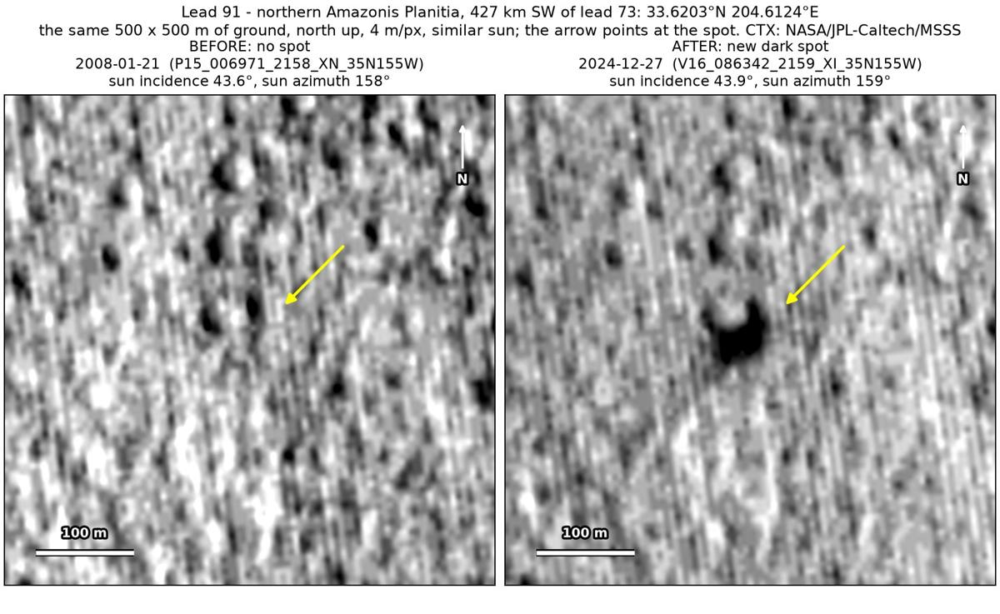
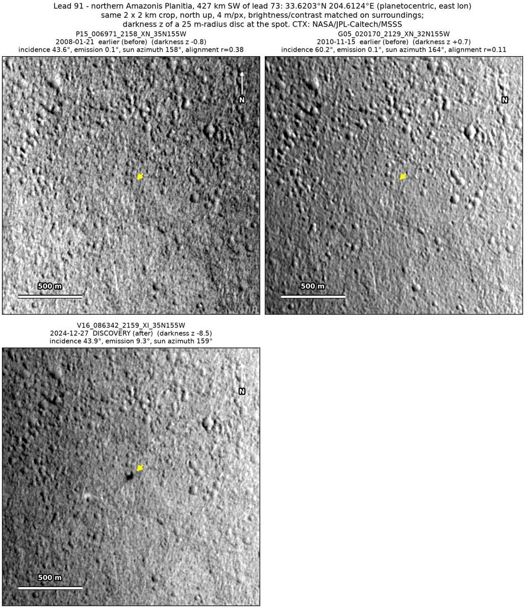
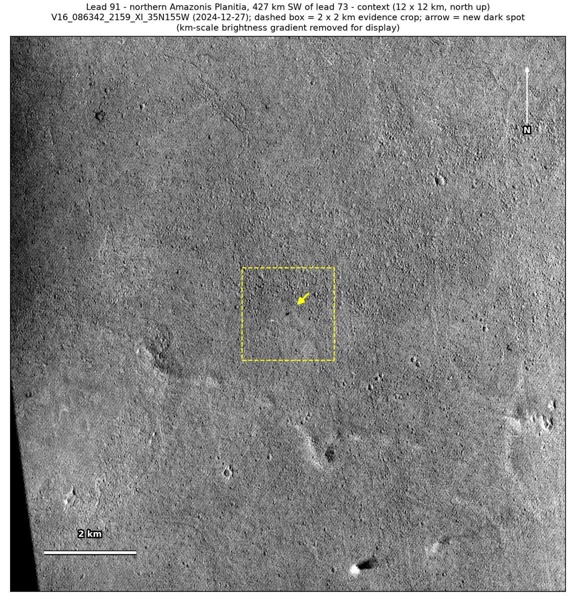

Professor of Mathematics
Paata Ivanisvili
Department of Mathematics, University of California, Irvine

← Possible new impact sites on Mars
Candidate 91: Knobby plains in northern Amazonis Planitia, 427 km south-west of candidate 73
Promising · roughly 45%

What changed. A compact dark spot about 50 m across appeared on knobby plains in northern Amazonis Planitia, beside a small knob that was already there, between November 2010 and December 2024. It is visible in one CTX image so far.
Why it may be a new impact. An image from January 2008, taken under the same sun as the December 2024 image, shows the knob as a small dark mark but no spot, so the spot is not a shadow, and an image from November 2010 shows no spot either. When the January 2008 image is subtracted from the later one, the spot is the only compact dark change in the surrounding 2 × 2 km. A compact new dark spot can be the blast zone of a small new crater.
- Location
- 33.620° N, 204.612° E (155.388° W)
- Absent
- 21 January 2008 and 15 November 2010
- Present
- 27 December 2024
- Size
- Compact dark spot about 50 m across (62 × 66 m), beside a small knob that was already there
- Confidence
- Promising candidate: roughly 45% likely to be a new impact.
- Caveat
- Only one image shows it, and dust devils are frequent in northern Amazonis: wind or a dust devil could darken a patch this size, though the spot is compact with no tracks near it. It could also be a small slope streak, left by dust sliding down the knob, though it is round rather than a tapering fan. The November 2010 image, under a low sun, lines up poorly, and no nearby feature settles whether the earlier images would have shown the spot. No image from the high-resolution HiRISE camera covers it; the nearest ends 25.5 km away. Like every candidate here, it is unconfirmed: see the caveat.

